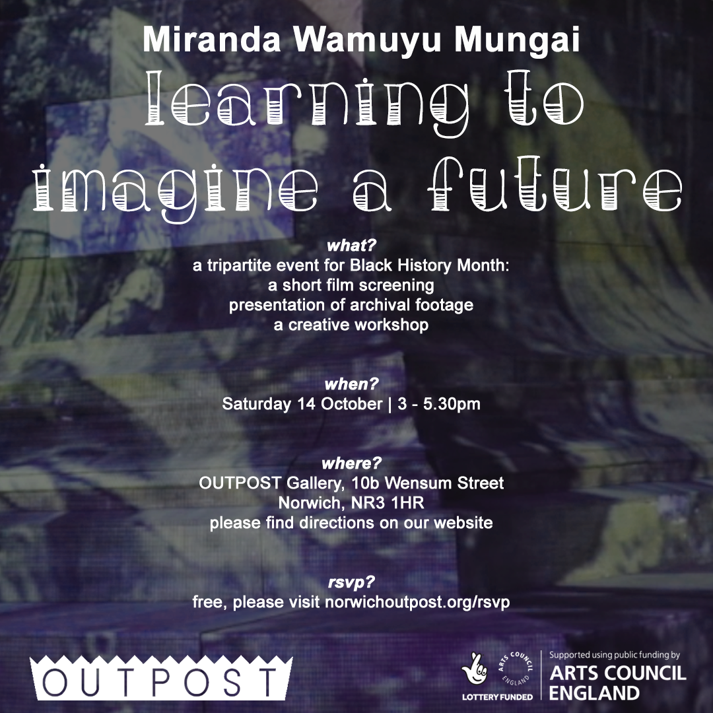
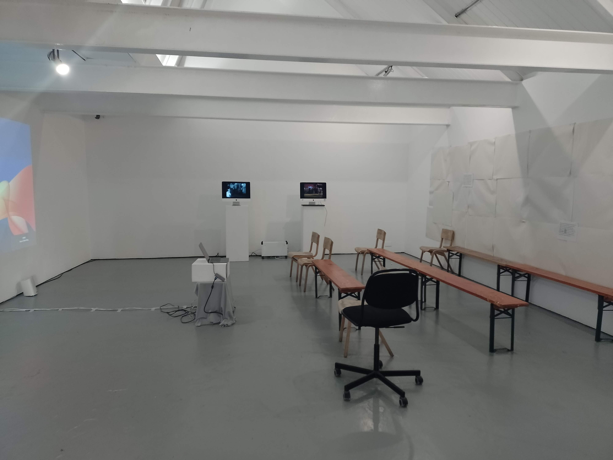
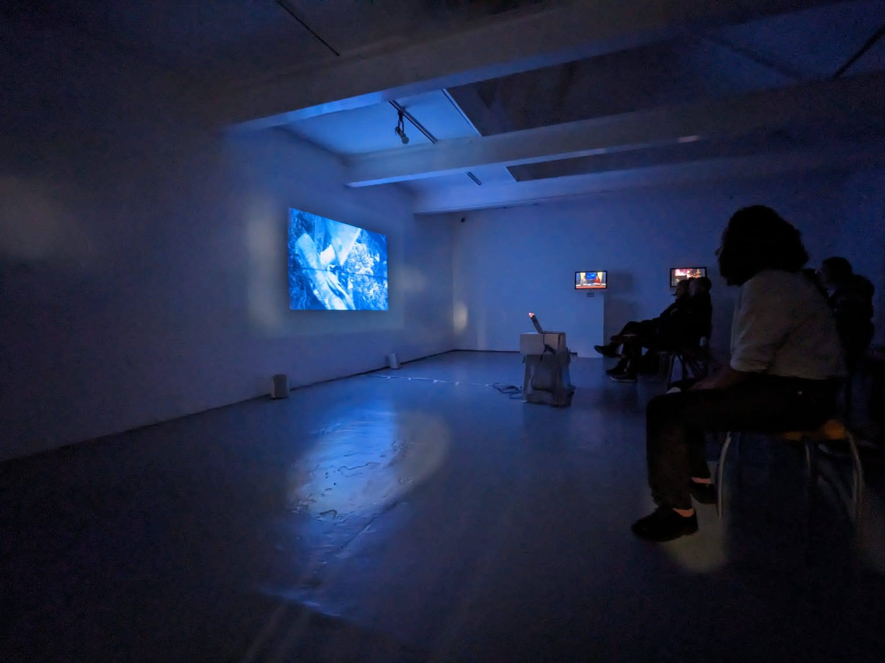
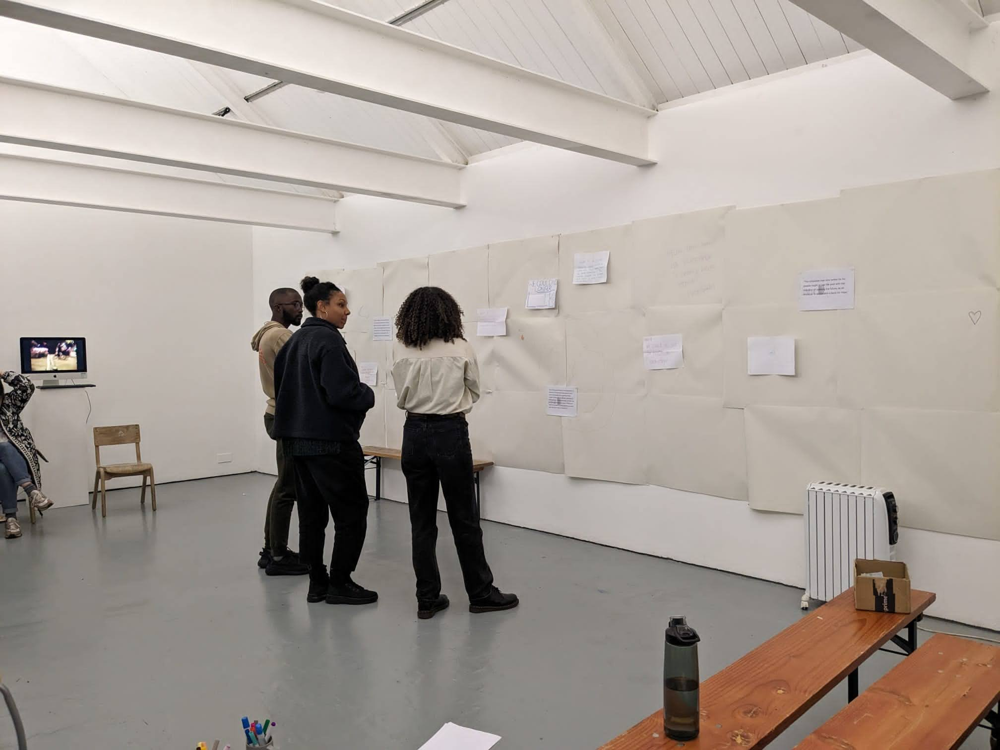
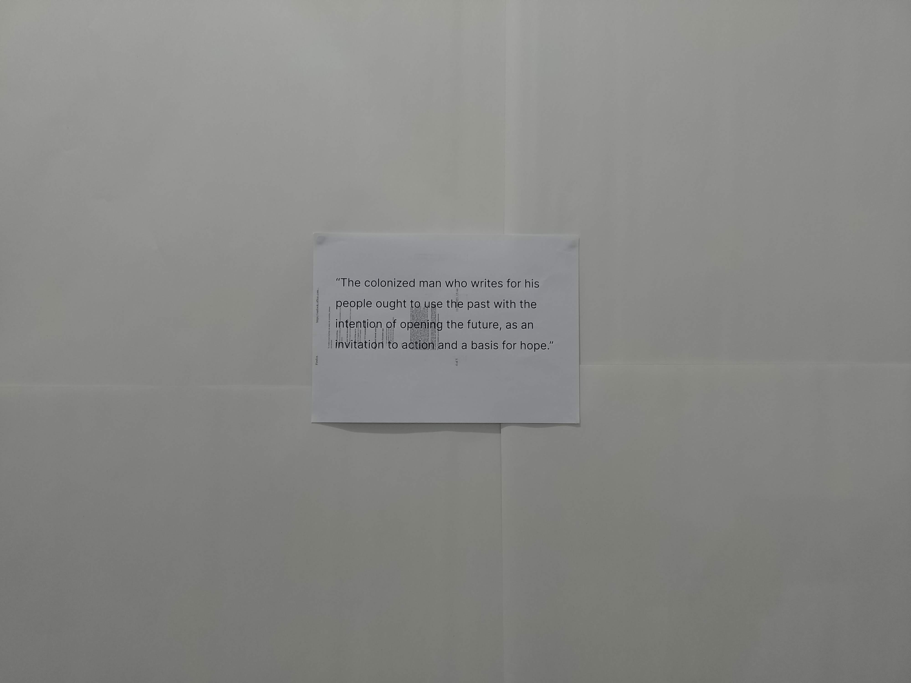
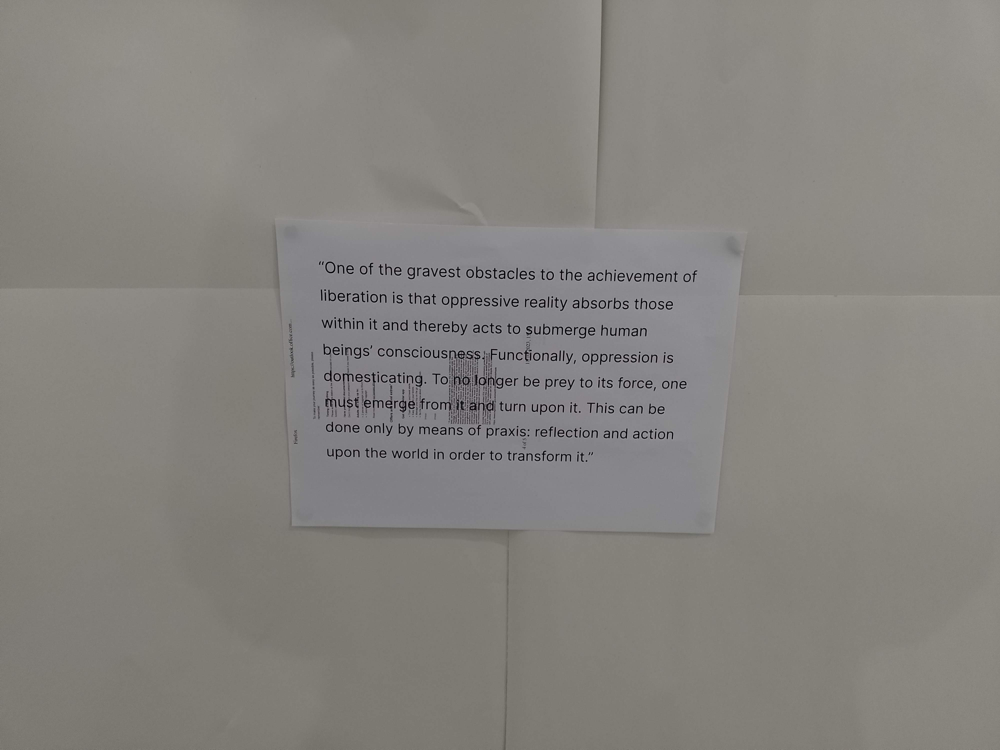
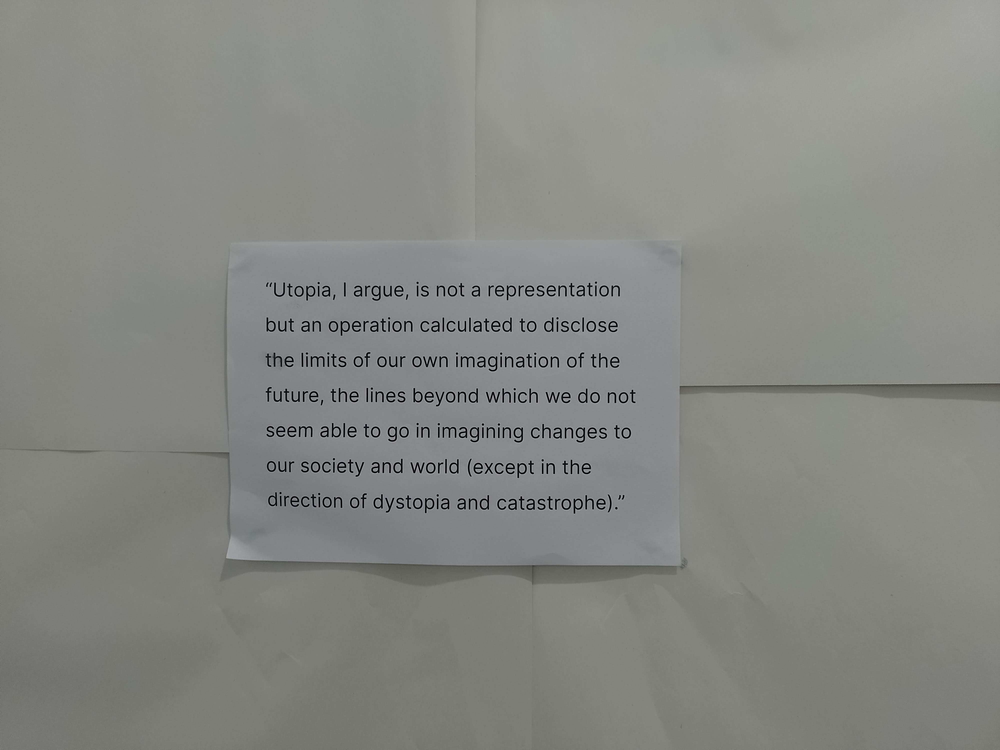
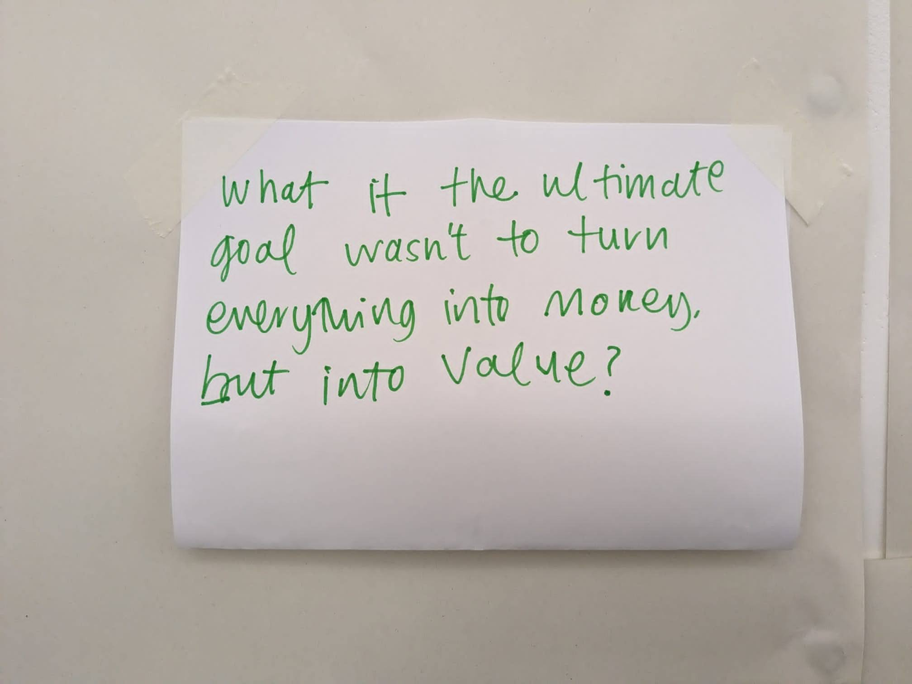
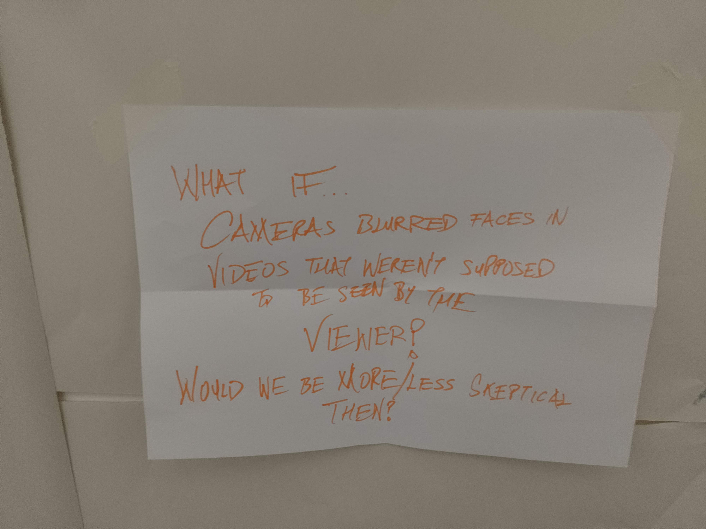
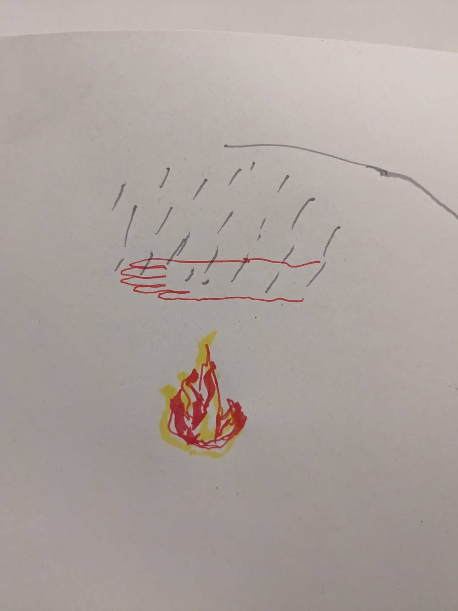

I was selected from an open call to deliver a screening and workshop for Black History Month at OUTPOST Gallery, Norwich on Saturday 14 October 2023.

Black histories, decolonial histories, histories at the intersection of class, race, and gender all offer an orientation towards futures of freedom, liberation, and solidarity. The power of these histories relies on recognising their enduring possibility, on bringing the past into conversation with the present, for the benefit of a future that feels increasingly unimaginable.
OUTPOST became a generative space for discussion and the creative imagining of these futures, anchored in the images and words that escape the embalmment of time.

This tripartite event comprised of:

I programmed a screening of two short experimental documentaries, Speech for a Melting Statue (Collectif Faire-Part, Belgium, 2023) and Boots on Ground(Kiran Kaur Brar, UK, 2021).
The screening was followed by an invitation to respond to both or one of the films. The discussion broadly considered the nature of representation, digital technologies, and using cameras in acts of resistance.
I chose a selection of public domain archive footage of riots and protests in response to racist incidents of police brutality, found on internet archive. On one screen was looping footage from the US and the UK, starting with the Watts Uprising in 1965 and chronologically moving to the BLM protests and riots of 2020. On the other screen, I selected two archive clips - one from the 2011 Tottenham Riots and another from the 2020 Black Lives Matter protest in London. We watched them in relation to a quote I presented from Towards a Third Cinema, and talked about image circulation within flawed networked systems.




We ended the session with a creative workshop. Everyone participated a “what if…” statement that imaginatively responded to the conversations we had. We wrote our statements anonymously and placed them in a box. Everyone then read out each other’s anonymous statements and stuck them onto the papered wall. The intention was to introduce room for playfulness and creativity, and to end the conversation with an orientation towards future possibilities.


